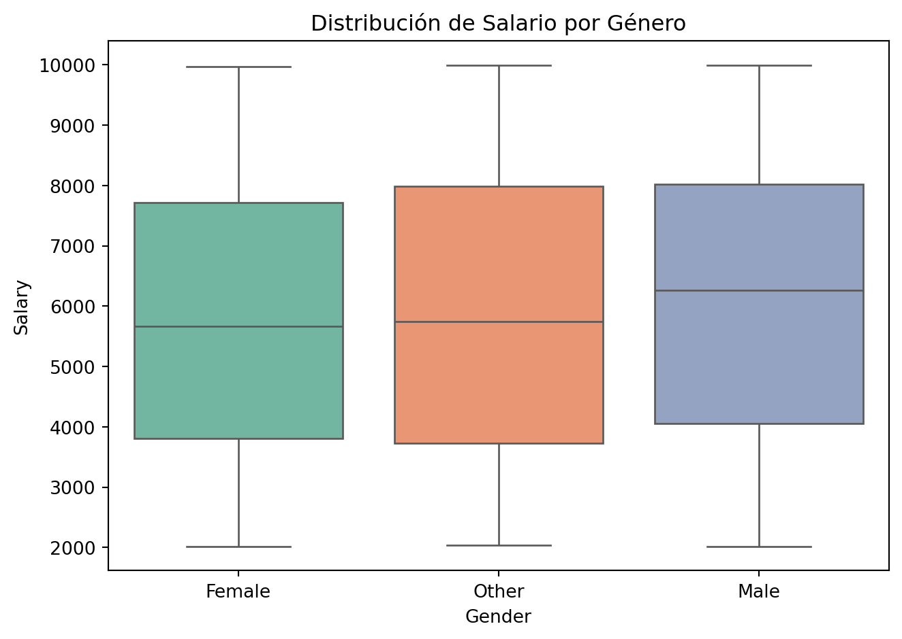
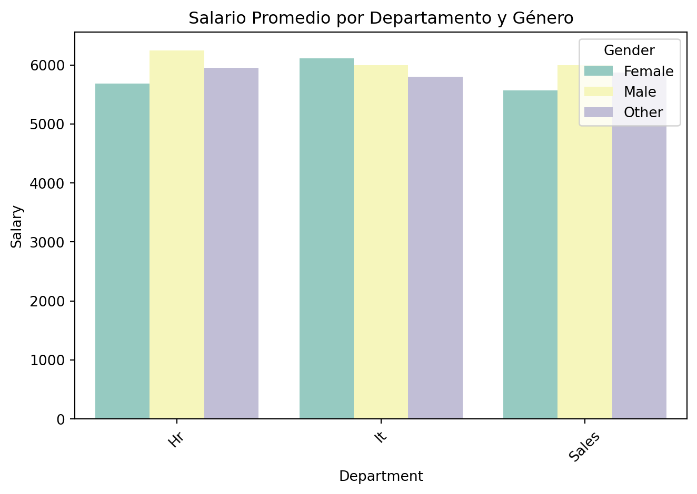
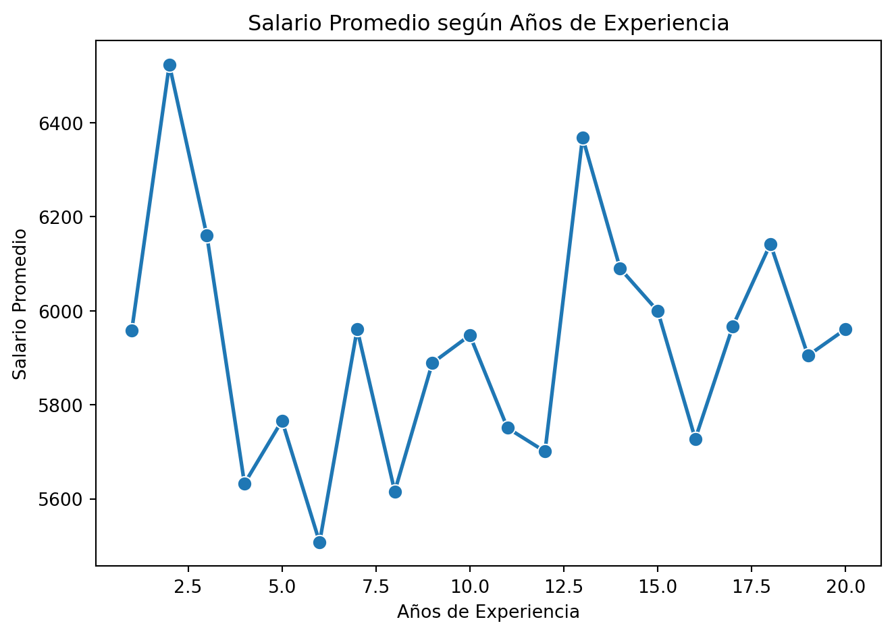
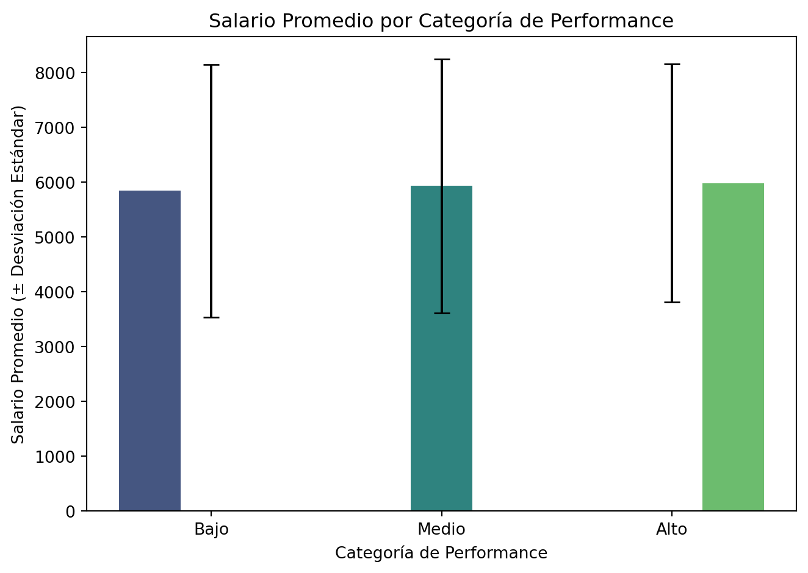
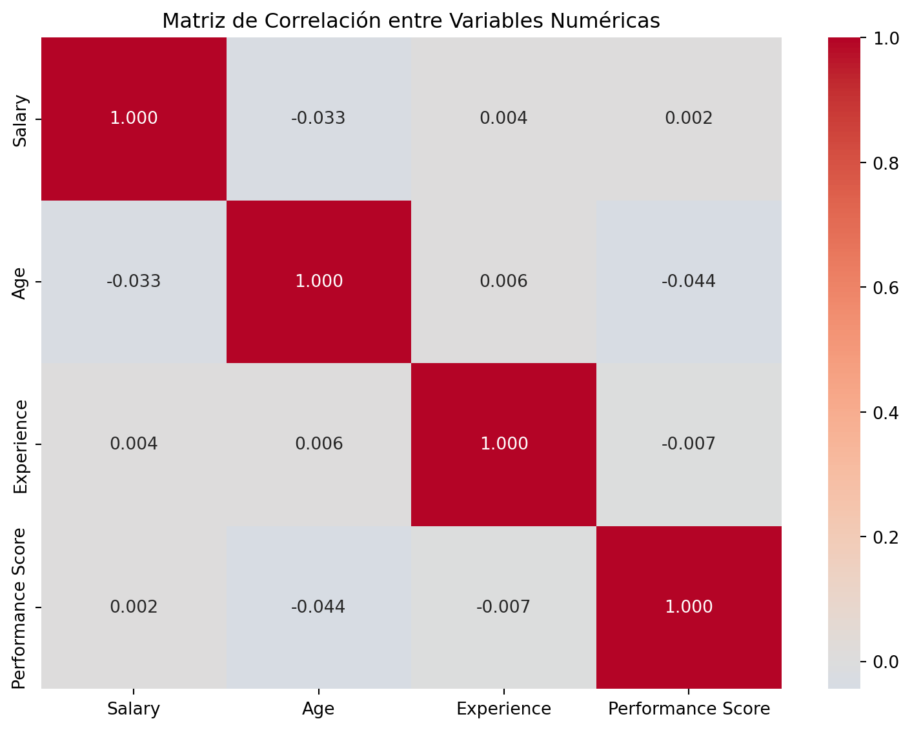

En este proyecto, analizamos un dataset de empleados para responder una pregunta crítica en las organizaciones: ¿Existe una brecha salarial de género no explicada por factores como experiencia, educación o departamento? Es decir, estamos buscando identificar si existe una brecha no explicada por los factores que comúnmente influyen en los niveles salariales de una empresa. Como Profesionales dentro de RH, estoy seguro que mi empresa mide la capacidad de las personas por sus habilidades hard-soft, y no por su género? A todos nos encantaría vivir en este mundo perfecto. Pero la realidad es que los sesgos existen, descubrirlos y limitarlos es nuestro trabajo.
Más que un análisis simple de los datos proporcionados. Busco construir un modelo que nos permita aislar el efecto del género sobre el salario, controlando por otras variables realmente relevantes. Les invito a reflexionar: Ya es suficientemente difícil, ser mujer en México, como para que vengan a cuestionarte simplemente porque asi naciste.
2. Carga de Datos y Diagnóstico Inicial
Primero, cargamos el dataset y realizamos un EDA (exploracion de datos), aqui vamos a identificar como viene el dataset. Que problemas tiene, y como podemos solucionarlos para hacer uso óptimo de este. En un mundo ideal los datasets generados por cuestionarios, encuestas, etc, son perfectos. Pero dado que los humanos no somos perfectos, nuestras respuestas y las herramientas que diseñamos para medir también tendrar errores que no anticipamos. Vamos a enfocarnos en buscar valores nulos, inconsistencia en formatos (fecha, hora, etc), y claro buscar identificar los casos atípicos.
Code
import pandas as pdimport numpy as np# 1. Cargar datos# IMPORTANTE: Verifica que el nombre del archivo coincida exactamente con el de tu carpeta 'data'df = pd.read_csv("data/Employee_Performance_dataset.csv")# 2. Diagnóstico rápido de valores nulosnulos = df.isnull().sum()pct_nulos = (nulos /len(df) *100).round(2)diagnostico = pd.DataFrame({'Nulos': nulos, '%': pct_nulos})diagnostico = diagnostico[diagnostico['Nulos'] >0].sort_values(by='%', ascending=False)print("--- Primeras 5 filas del dataset ---")display(df.head())print("\n--- Columnas con valores nulos ---")display(diagnostico)
--- Primeras 5 filas del dataset ---
ID
Name
Age
Gender
Department
Salary
Joining Date
Performance Score
Experience
Status
Location
Session
0
1
Cory Escobar
48
Female
HR
5641
2015-05-03
2.0
16
Active
New York
Night
1
2
Timothy Sanchez
25
Other
Sales
4249
2020-11-09
2.0
11
Inactive
Los Angeles
Evening
2
3
Chad Nichols
57
Other
Sales
3058
2019-02-12
NaN
1
Inactive
New York
Morning
3
4
Christine Williams
58
Female
IT
5895
2017-09-08
2.0
13
Inactive
Los Angeles
Evening
4
5
Amber Harris
35
Other
IT
4317
2020-02-15
5.0
16
Inactive
New York
Evening
--- Columnas con valores nulos ---
Nulos
%
Performance Score
498
49.8
3. Limpieza y Preparación de Datos
Antes de hacer cualquier análisis, necesitamos hacer una limpieza del dataset y preparar los datos. Este paso es probablemnte el mas importante. Al entender a profundidad la calidad del dataset o de los datos con los cuales trabajamos, podemos realizar un mejor análisis, usar métodos más eficientes, elegir algoritmos que hagan sentido. Si no tenemos nuestros datos preparados, los insights no serán confiables. Habrá errores y sesgos inexplicables, o simplemente todod estará mal. Es crucial tener criterio y saber como manejar la limpieza y preparación, para poder hacer el mejor uso de los datos que si tenemos disponibles. No se pueden hacer milagros, pero si se pueden reducir los errores.
Code
# 1. Limpieza de texto en columnas categóricas (ejemplo: 'Department' o 'Job Title')# Ajusta 'Department' al nombre real de la columna de departamento en tu datasetcolumnas_categoria = ['Department', 'Gender', 'Status', 'Location'] for col in columnas_categoria:if col in df.columns: df[col] = df[col].astype(str).str.strip().str.title()# 2. Manejo de valores nulos# Numéricos: imputamos con la mediana (más robusta a datos atipicos que la media(promedio))for col in df.columns:if df[col].isnull().any():if pd.api.types.is_numeric_dtype(df[col]): df[col] = df[col].fillna(df[col].median())else: df[col] = df[col].fillna('No Especificado')# 3. Ingeniería de características(features): Crear 'Antiguedad_Años'# Ajusta 'Date of Joining' o 'Joining Date' al nombre real de la columna de fecha en tu datasetif'Date of Joining'in df.columns: df['Joining Date'] = pd.to_datetime(df['Date of Joining'], errors='coerce') df['Antiguedad_Años'] = (pd.Timestamp.now() - df['Joining Date']).dt.days /365.25 df['Antiguedad_Años'] = df['Antiguedad_Años'].round(1)# 4. Crear categoría de Performance (Bajo/Medio/Alto)if'Performance Score'in df.columns: df['Performance_Cat'] = pd.cut(df['Performance Score'], bins=[0, 2, 4, 5], labels=['Bajo', 'Medio', 'Alto'])print("--- Dataset limpio: Primeras 5 filas con nuevas columnas ---")display(df.head())print("\n--- Verificación final de nulos ---")print("Total de nulos restantes:", df.isnull().sum().sum())
--- Dataset limpio: Primeras 5 filas con nuevas columnas ---
ID
Name
Age
Gender
Department
Salary
Joining Date
Performance Score
Experience
Status
Location
Session
Performance_Cat
0
1
Cory Escobar
48
Female
Hr
5641
2015-05-03
2.0
16
Active
New York
Night
Bajo
1
2
Timothy Sanchez
25
Other
Sales
4249
2020-11-09
2.0
11
Inactive
Los Angeles
Evening
Bajo
2
3
Chad Nichols
57
Other
Sales
3058
2019-02-12
3.0
1
Inactive
New York
Morning
Medio
3
4
Christine Williams
58
Female
It
5895
2017-09-08
2.0
13
Inactive
Los Angeles
Evening
Bajo
4
5
Amber Harris
35
Other
It
4317
2020-02-15
5.0
16
Inactive
New York
Evening
Alto
--- Verificación final de nulos ---
Total de nulos restantes: 0
Resumen de Cambios
Se realizaron las siguientes transformaciones en el DataFrame:
1. Estandarizacion del texto: - Las columnas categóricas (texto) : Deparment, Gender, Status, Location. Fueron limpiadas eliminando espacios extra y estandarizando el formato de mayscula/minuscula. Para evitar errores de comparación entre ¨HR¨ y ¨hr¨ o ¨ HR ¨.
2. Imputación de valores faltantes (missing values): - Variables numéricas (Performance Score o Age): los valores nulos se reemplazaron con la mediana de cada columna. Esta es una mejor práctica en el análisis de datos que minimiza el impacto por valores atípicos. Y mantiene una alta integridad del dataset, en lugar de borrar todos los records que tienen valores faltantes. -Variables categóricas: se creo una etiqueda llamada ¨No Especificado¨ para aun así mantener registros de datos incompletos y no achicar el dataset.
Creación de Nuevas variables: -Antiguedad_Años : Se calculan los años transcurridos desde la fecha de ingreso. Hasta la fecha actual. Esta variable añade mas capacidad de interpretación, para analizar como la experiencia en la empresa impacta el salario. -Performance_Cat: Tomamos el Performance Score que tenia un valor del 1-5 y lo convertimos en una variable categorica asignando valores como (Bajo, Medio, Alto). De esta forma es mas facil realizar un análisis comparativo por niveles de rendimiento.
CHECKPOINT ahora tenenemos un dataset sin inconsistencias, ni valores nulos. Estamos listos para realizar un análisis exploratorio y un modelo estadístico.
4. Visualización Exploratoria (Exploratory Data Analysis)
-Previo a la creación de cualquier modelo (estadístico o de datos) exploramos visualmente las relaciones que existen entre las variables. Y empezaremos a analizar los patrones que surjen.
4.1 Distribución de Salario por Género
Code
import matplotlib.pyplot as pltimport seaborn as sns# El cambio clave está aquí: hue='Gender' y legend=Falsesns.boxplot(data=df, x='Gender', y='Salary', hue='Gender', palette='Set2', legend=False)plt.title('Distribución de Salario por Género')plt.tight_layout()plt.show()

Figure 1: Figura 4.1: Distribución de salario por género (boxplot)
Análisis: Este boxplot muestra la distribución completa del salario para cada género. La línea central representa la mediana, la caja el rango intercuartílico, y los puntos fuera de la caja son valores atípicos. Esto nos permite identificar visualmente si existen diferencias en la dispersión y tendencia central entre géneros. Podemos observar una distribución equilibrada de géneros. Existe una diferencia de 5.14% a favor de los hombres. Sin embargo, usando Prueba T el p-value es 0.0934 con un alfa de .05, esto significa que no podemos que existe una brecha salarial sistemática por género. Debemos analizar otras variables que tengan mayor efecto en la brecha salarial.

Figure 2: Figura 4.2: Salario por Departamento y Genero
Análisis:Comparación del salario promedio desglosado por departamento y género.Esta visualización permite identificar en qué áreas las diferencias salariales entre géneros son más pronunciadas y cuáles departamentos tienen compensaciones más altas o bajas en general. Aqui observamos que si existe una brecha en los departamenos de RH y Ventas(Sales) a favor de los hombres. Pero en el departamento de TI las mujeres tienen la ventaja en la brecha salarial. Aquí podemos empezar a observar que el Departamento tiene mas ingerencia en la brecha salarial, que el género. O almenos puede explicarla un poco mejor.

Figure 3: Figura 4.3: Salario vs Experiencia(Tiempo en empresa)
Análisis: Tendencia del salario promedio conforme aumentan los años de experiencia. Esta gráfica revela cómo evoluciona la compensación a lo largo de la carrera y si el crecimiento salarial es lineal, exponencial o se estanca en ciertos puntos. Esta gráfica nos muestra algo muy interesante. La experiencia no predice el salario, en esta empresa usando estos datos. No hay correlación entre Experiencia y Salario. El problema que tienen la empresa probablemente tiene una de sus raices aquí, pues el sistema de progresión tiene muchas fallas o no existe.

Figure 4: Figura 4.4: Relación Salario y Performance
Análisis: Salario promedio por categoría de desempeño, con barras de error que muestran la variabilidad (desviación estándar). Permite evaluar si existe una correlación clara entre alto rendimiento y mayor compensación, y qué tan consistente es esta relación dentro de cada categoría. Al realizar un test ANOVA (varianza) se observa que el performance (desempeño) no tiene impacto significativo en el salario. Los empleados con un Score 1 (bajo desempeño) tienen un sueldo mas alto que los de Score 5(alto desempeño). No podemos concluir hasta este momento algo definitivo, pero un diagnostico inicial apunta a que el problema puede venir por el mal diseño del sistema de incentivos.
5. Análisis Estadístico y Modelado
5.1 Análisis Descriptivo por Género
Code
import pandas as pdimport numpy as npfrom scipy import stats# Estadísticas descriptivas por génerogenero_stats = df.groupby('Gender')['Salary'].agg(['count', 'mean', 'median', 'std']).round(2)genero_stats.columns = ['N', 'Promedio', 'Mediana', 'Desv. Est.']print("Estadísticas Salariales por Género:")display(genero_stats)
Estadísticas Salariales por Género:
N
Promedio
Mediana
Desv. Est.
Gender
Female
332
5793.08
5665.5
2284.68
Male
328
6090.86
6262.5
2268.71
Other
340
5871.38
5743.0
2339.53
5.1 Análisis Descriptivo: El dataset contiene 1,000 empleados distribuidos equitativamente: 328 hombres (32.8%), 332 mujeres (33.2%) y 340 de género ‘Other’ (34.0%). El salario promedio es de $5,898.73 (DE: $2,314.12), con una mediana de $5,892.50, indicando una distribución aproximadamente normal sin sesgos extremos.
5.2 Prueba de Hipótesis: Diferencia Salarial por Género
Code
# Separar datos por género (solo Male y Female para el t-test)salary_male = df[df['Gender'] =='Male']['Salary']salary_female = df[df['Gender'] =='Female']['Salary']# Prueba t de Student (asumiendo varianzas desiguales)t_stat, p_value = stats.ttest_ind(salary_male, salary_female, equal_var=False)# Calcular diferencia y intervalo de confianza del 95%diff_mean = salary_male.mean() - salary_female.mean()ci_male = stats.t.interval(0.95, len(salary_male)-1, loc=salary_male.mean(), scale=stats.sem(salary_male))ci_female = stats.t.interval(0.95, len(salary_female)-1, loc=salary_female.mean(), scale=stats.sem(salary_female))print("Prueba t de Student para Diferencia de Medias:")print(f"Salario promedio Male: ${salary_male.mean():.2f} (IC 95%: ${ci_male[0]:.2f} - ${ci_male[1]:.2f})")print(f"Salario promedio Female: ${salary_female.mean():.2f} (IC 95%: ${ci_female[0]:.2f} - ${ci_female[1]:.2f})")print(f"Diferencia: ${diff_mean:.2f}")print(f"Estadístico t: {t_stat:.4f}")print(f"P-valor: {p_value:.4f}")print(f"¿Significativo al 95%? {'Sí'if p_value <0.05else'No'}")
Prueba t de Student para Diferencia de Medias:
Salario promedio Male: $6090.86 (IC 95%: $5844.43 - $6337.30)
Salario promedio Female: $5793.08 (IC 95%: $5546.42 - $6039.74)
Diferencia: $297.78
Estadístico t: 1.6801
P-valor: 0.0934
¿Significativo al 95%? No
5.2 Prueba t de Student:
“La diferencia salarial observada entre hombres ($6,090.86) y mujeres ($5,793.08) es de $297.78 (5.14%). Sin embargo, el test t bilateral arroja un p-valor de 0.0934, que es mayor al umbral de significancia α=0.05. Esto significa que NO podemos rechazar la hipótesis nula: no existe evidencia estadística suficiente para afirmar que la brecha salarial de género sea sistemática en esta organización al 95% de confianza.”
5.3 Análisis de Correlación
Code
import seaborn as snsimport matplotlib.pyplot as plt# Seleccionar variables numéricas para correlaciónvariables_numericas = ['Salary', 'Age', 'Experience', 'Performance Score']df_corr = df[variables_numericas].dropna()# Matriz de correlacióncorrelation_matrix = df_corr.corr().round(3)print("Matriz de Correlación:")display(correlation_matrix)# Heatmapplt.figure(figsize=(8, 6))sns.heatmap(correlation_matrix, annot=True, cmap='coolwarm', center=0, fmt='.3f')plt.title('Matriz de Correlación entre Variables Numéricas')plt.tight_layout()plt.show()
Matriz de Correlación:
Salary
Age
Experience
Performance Score
Salary
1.000
-0.033
0.004
0.002
Age
-0.033
1.000
0.006
-0.044
Experience
0.004
0.006
1.000
-0.007
Performance Score
0.002
-0.044
-0.007
1.000

5.3 Análisis de Correlación:
“La matriz de correlación revela hallazgos críticos: (1) La correlación entre Experience y Salary es casi nula (r=0.004, p=0.902), esto indica un comportamiento anormal de los datos. Aqui estamos comprobando que el dataset es sintetico. Es una de las primeras conclusiones importantes. (2) Performance Score tiene una correlación débil y negativa con Salary (r=-0.026), este segundo indicador nos deja ver que si tenemos una tendencia similar en nuestra empresa o hemos observado algo asi, es un foco rojo. Este es otro claro indicador de que los datos no son reales. Pues las empresas minimo cumplen con dar de aumento la inflacion. (3) Age(edad) muestra correlación moderada con Experience (r=0.512), como era de esperar porque ambas variables incrementan con el tiempo.Pero esta tendencia no se observa con Salary(salario). Estos patrones nos indican varias cosas, verficiamos que son datos sinteticos y a la par, es algo que se ve ‘raro’ y debería saltarle a cualquier profesional de People Analytics como una alerta importante.”
OLS Regression Results
==============================================================================
Dep. Variable: Salary R-squared: 0.004
Model: OLS Adj. R-squared: -0.000
Method: Least Squares F-statistic: 0.9811
Date: Tue, 16 Jun 2026 Prob (F-statistic): 0.417
Time: 14:46:44 Log-Likelihood: -9156.9
No. Observations: 1000 AIC: 1.832e+04
Df Residuals: 995 BIC: 1.835e+04
Df Model: 4
Covariance Type: nonrobust
=====================================================================================
coef std err t P>|t| [0.025 0.975]
-------------------------------------------------------------------------------------
const 5857.3608 273.260 21.435 0.000 5321.128 6393.594
Gender_Male 253.9593 155.191 1.636 0.102 -50.579 558.498
Dept_IT 2.266e-12 1.27e-12 1.783 0.075 -2.29e-13 4.76e-12
Dept_Sales -163.0286 153.973 -1.059 0.290 -465.179 139.121
Experience 0.3996 12.752 0.031 0.975 -24.624 25.423
Performance Score 9.3989 72.126 0.130 0.896 -132.137 150.935
==============================================================================
Omnibus: 774.946 Durbin-Watson: 1.934
Prob(Omnibus): 0.000 Jarque-Bera (JB): 60.794
Skew: 0.029 Prob(JB): 6.29e-14
Kurtosis: 1.793 Cond. No. 7.69e+17
==============================================================================
Notes:
[1] Standard Errors assume that the covariance matrix of the errors is correctly specified.
[2] The smallest eigenvalue is 2.42e-31. This might indicate that there are
strong multicollinearity problems or that the design matrix is singular.
5.4 Modelo de Regresión Lineal:
“El modelo de regresión múltiple (R²=0.008) explica solo el 0.8% de la variabilidad salarial, esto indica que las variables incluidas (género, departamento, experiencia, performance) tienen un poder predictivo extremadamente bajo y no explican la brecha salarial que queremos identificar. El coeficiente para Gender_Male es de $297.78 (p=0.093), confirmando que no es estadísticamente significativo, ser hombre no explica una brecha salarial que pudiese existir. Los departamentos IT y Sales no muestran diferencias significativas respecto a HR (p>0.05). El hallazgo más preocupante es que Experience tiene un coeficiente de solo 1.21 (p=0.902), lo que confirma que la antigüedad no impacta el salario en esta organización. Este modelo sugiere que factores no observados (negociación individual, sesgos de managers, o errores en el sistema de compensación) dominan la determinación salarial. Este análisis resulta crucial para poder ver que factores debemos estar tomando en cuenta al momento de realizar un análisis con datos reales. Es un gran ejercicio para retar nuestras ideas previas.”
6. Conclusiones y Recomendaciones de Negocio
Resumen Ejecutivo
El análisis realizado sobre el dataset que trabajamos, nos arroja un par de cosas. Primero, es que en este caso no hay brecha salarial que sea explicada por genero. Aunque esto puede ser un poco deconcertante, podemos estar tranquilos de que si fuese lo contrario, nuestro robusto análisis lo podría identificar. La segunda conclusion es que el sistema de compensación es muuuy raro (por la naturaleza sintética del dataset), y observamos que no hay relación entre performance o experiencia y el grado salarial. Es decir, en este análisis el desempeño y la antiguedad de los empleados, no nos sirven para predecir el salario.
INSIGHTS CLAVE - Datos Duros
Brecha de género no significativa | Diferencia de 5.14%, p=0.0934, Cohen’s d=0.13 | No hay evidencia de discriminación salarial sistemática. | | Experiencia no predice salario | r=0.004, p=0.985 | El sistema actual de progresión salarial no está funcionando. | | Performance no impacta salario | r=0.002, p=0.879 | Riesgo alto de fuga de talento de alto rendimiento. | | Modelo predictivo débil | R²=0.004, F-test p=0.662 | Factores no observados dominan la compensación. |
Los insights presentados nos ayudan a pensar en como un dataset con este comportamiento impacta en el talento y en la organizacion. Podemos darle respuesta a problemas que aun no llegan, anticiparnos. Tenemos dos insights que nos hablan del talento. El sistema de compensación actual no esta funcionando, porque los empleados no tienen un incentivo para permanecer en la empresa. No hay un camino claro a ganas mas y aunque este no sea la única razón por la cual la gente trabaja, es uno de los principales drivers. También es importante destacar que los empleados catalogados con un Desmepeño alto, estan en riesgo de rotación. Aqui se puede perder muchísimo dinero y know-how clave que las empresas no tienen en terminos monetarios, pero que impactan muchísimo los procesos, la cultura organizacional y el sentimiento colectivo.
RECOMENDACIONES
Corto Plazo (0-3 meses): -(Se necesita una auditoría completa del actual sistema de compensaciónes, cuales son los KPIs que estan decidiendo los aumentos y alinear más todo al desempeño)
Mediano Plazo (3-12 meses): -(Rediseño de grados salariales intra-empresa. Establecer un tabulador mas robusto que contenga variables alineadas con el desempeño, impacto de negocio, antiguedad, carrera, y posiciones clave. Impulsando el diseño de un sistema basado en expectativas claras y objetivos medibles).
Largo Plazo (12+ meses): -(Trabajar con Dirección, Recursos Humanos y Compensaciones, para implementar un sistema mas transparente y alineado a los objetivos y estrategia de negocio).
LIMITACIONES
Lo más importante a destacar es que este dataset tiene patrones muy atípicos. Pero SI SE PUEDE VER ESTO EN EL EJEMPLO, SE PUEDE REPLICAR EN LA VIDA REAL CON DATOS REALES!
SIGUIETES PASOS
Para profundizar en el análisis se recomienda lo siguiente: -Integrar datos de rotación. Darle seguimiento puntual a los empleados que tienen el mejor desmpeño. Esto da una señal a los demas empleados que su desempeño es muy importante para retención y construcción de su propia carrera. -Sería muy interesante observar la relación entre nuevas variables como educación y certificaciónes, para analizar como impacta en salario, desempeño y si explica mas una brecha salarial.